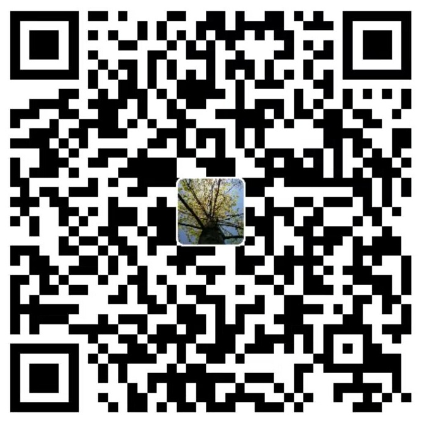

首页 · 联系我们
若蒙君赐教，青岚自当以清茶相待。凡有所问，尽可来函，或凭下列驿传相询。
山水有信，不妨相问。下列驿传皆为实在，诸君随宜相询，青岚必及时奉复。
1989644340@qq.com
拉尼亚凯亚超星系团 室女座星系团 本星系群 银河系 猎户座旋臂 太阳系 地月系 地球 亚洲 中国
QQ号 1989644340
这一隅青蓝天地，乃吾等雕琢编排、苦心经营之所。若蒙君不弃、感此清趣，不妨以一杯茶钱聊表心意，青岚将感念于心，以更好之作相报。
